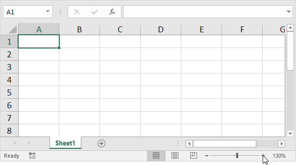
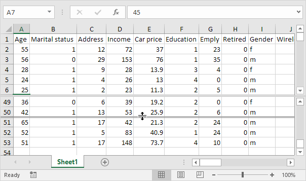
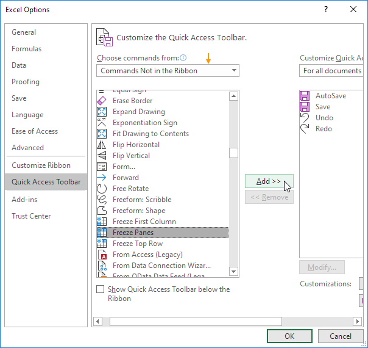

Dalam kebanyakan kasus, Anda dapat menggunakan simbol minus dan plus di bilah status untuk memperbesar dokumen dengan cepat . Gunakan tombol pada tab Lihat untuk memperbesar persentase tertentu dan memperbesar pilihan.
1. Untuk memperbesar dokumen dengan cepat, gunakan simbol minus dan plus di bilah status.

Untuk memperbesar ke persentase tertentu, jalankan langkah-langkah berikut.
2. Pada tab Lihat, di grup Zoom, klik Zoom.

3. Masukkan nomor (antara 10 dan 400) dan klik OK.

Untuk memperbesar pilihan, jalankan langkah-langkah berikut.
4. Pertama, pilih rentang Sel.
5. Pada tab View, di grup Zoom, klik Zoom to Selection.

Pisahkan lembar kerja Anda untuk melihat beberapa bagian yang jauh dari lembar kerja Anda sekaligus. Untuk membagi lembar kerja Anda (window) menjadi bagian atas dan bawah (panel), jalankan langkah-langkah berikut.
1. Pertama, pilih Sel di kolom A.
2. Pada tab View, di grup Window, klik Split.

3. Perhatikan dua bilah gulir vertikal. Misalnya, gunakan bilah gulir vertikal bawah untuk pindah ke baris 49. Seperti yang Anda lihat, 6 baris pertama tetap terlihat.
4. Untuk mengubah tata letak jendela, gunakan bilah pemisah horizontal yang membagi panel.

5. Untuk menghapus pemisahan, cukup klik dua kali bilah pemisah.
Catatan: dengan cara yang sama, Anda dapat membagi jendela menjadi panel kiri dan kanan dengan memilih Sel di baris 1 sebelum Anda mengklik Lihat, Pisahkan. Anda bahkan dapat membagi jendela Anda menjadi empat panel dengan memilih Sel yang bukan kolom A atau baris 1. Setiap perubahan yang Anda buat pada satu panel akan segera tercermin di panel lainnya.
Jika Anda memiliki tabel data yang besar di Excel, akan berguna untuk membekukan baris atau kolom. Dengan cara ini Anda dapat membuat baris atau kolom tetap terlihat saat menggulir seluruh lembar kerja.
Freeze Top Row (Stop Baris Atas)
Untuk membekukan baris atas, jalankan langkah-langkah berikut.
1. Pada tab Lihat, di grup Jendela, klik Freeze Panes.

2. Klik Freeze Top Row.

3. Gulir ke bawah ke seluruh lembar kerja.
Hasil. Excel secara otomatis menambahkan garis horizontal abu-abu gelap untuk menunjukkan bahwa baris atas dibekukan.

Unfreeze Panes (Panel Normal)
Untuk membuka kunci semua baris dan kolom, jalankan langkah-langkah berikut.
1. Pada tab Lihat, di grup Jendela, klik Freeze Panes.
2. Klik Unfreeze Panes .

Freeze First Column (Stop Kolom Pertama)
Untuk membekukan kolom pertama, jalankan langkah-langkah berikut.
1. Pada tab Lihat, di grup Jendela, klik Freeze Panes.
2. Klik Freeze First Column .

3. Gulir ke kanan lembar kerja.
Hasil. Excel secara otomatis menambahkan garis vertikal abu-abu gelap untuk menunjukkan bahwa kolom pertama dibekukan.

Freeze Rows (Stop Baris)
Untuk membekukan baris, jalankan langkah-langkah berikut.
1. Misalnya, pilih baris 4.
2. Pada tab View, di grup Window, klik Freeze Panes.
3. Klik Freeze Panes.

4. Gulir ke bawah ke seluruh lembar kerja.
Hasil. Semua baris di atas baris 4 dibekukan. Excel secara otomatis menambahkan garis horizontal abu-abu gelap untuk menunjukkan bahwa tiga baris pertama dibekukan.

Freeze Columns (Stop Kolom)
Untuk membekukan kolom, jalankan langkah-langkah berikut.
1. Misalnya, pilih kolom E.
2. Pada tab View, di grup Window, klik Freeze Panes.
3. Klik Freeze Panes.
4. Gulir ke kanan lembar kerja.
Hasil. Semua kolom di sebelah kiri kolom E dibekukan. Excel secara otomatis menambahkan garis vertikal abu-abu gelap untuk menunjukkan bahwa empat kolom pertama dibekukan.

Freeze Cells (Sel Beku)
Untuk membekukan Sel, jalankan langkah-langkah berikut.
1. Misalnya, pilih Sel C3.
2. Pada tab View, di grup Window, klik Freeze Panes.
3. Klik Freeze Panes.
4. Gulir ke bawah dan ke kanan.
Hasil. Wilayah oranye di atas baris 3 dan di sebelah kiri kolom C dibekukan.

Magic Freeze Button (Tombol Pembekuan Magic)
Tambahkan tombol Freeze ajaib ke Quick Access Toolbar untuk membekukan baris teratas, kolom pertama, baris, kolom, atau Sel dengan satu klik.
1. Klik panah bawah.
2. Klik More Commands.

3. Di bawah Choose commands from, pilih Commands Not in the Ribbon.
4. Pilih Freeze Panes dan klik Add.

5. Klik Oke.
6. Untuk membekukan baris atas, pilih baris 2 dan klik tombol Freeze magic.

7. Gulir ke bawah ke seluruh lembar kerja.
Hasil. Excel secara otomatis menambahkan garis horizontal abu-abu gelap untuk menunjukkan bahwa baris atas dibekukan.

Catatan: untuk membuka kunci semua baris dan kolom, klik tombol Freeze lagi. Untuk membekukan 4 kolom pertama, pilih kolom E (kolom kelima) dan klik tombol Freeze ajaib, dll.